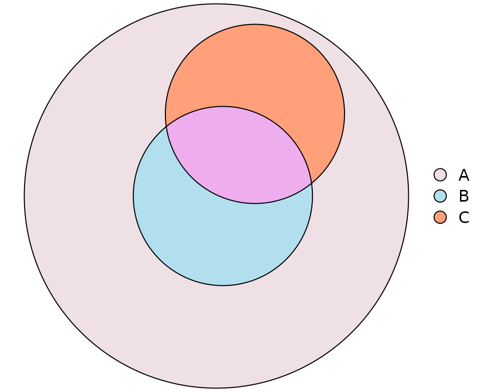
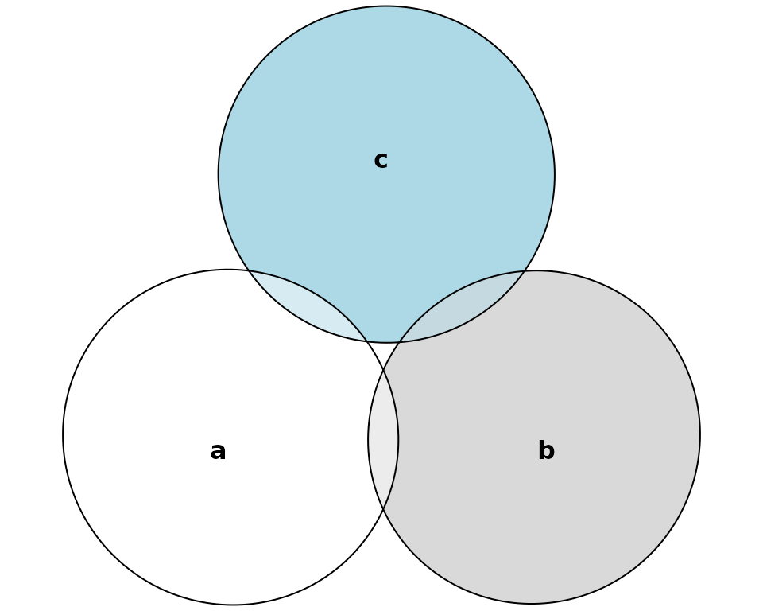

This vignette serves as a gallery for Euler diagrams and as a showcase of the various options for customization that are available.
Euler Diagrams
Uniform intersections
uniform_intersections <- euler(c("A" = 10, "B" = 10, "C" = 10,
"A&B" = 4, "A&C" = 4, "B&C" = 4,
"A&B&C" = 2))
plot(uniform_intersections)
Disjoint sets
disjoint_sets <- euler(c(A = 1, B = 1, C = 1))
plot(disjoint_sets,
labels = c("Tom", "Greg", "Alberta"),
edges = list(lty = 1:3))
A set contained in the intersection of two sets
completely_contained <- euler(c("A" = 15, "B" = 15, "C" = 0,
"A&B" = 3, "A&C" = 0, "B&C" = 0,
"A&B&C" = 3))
plot(completely_contained,
labels = list(col = c("white", "black", "black")),
edges = list(col = "white", lex = 2),
fills = c("black", "cyan", "orange"))
Two sets intersecting inside a third
intersecting_inside <- euler(c("A" = 15, "B" = 0, "C" = 0,
"A&B" = 3, "A&C" = 3, "B&C" = 0,
"A&B&C" = 2))
plot(intersecting_inside,
fills = list(fill = c("lavenderblush2",
"lightblue2",
"lightsalmon",
"",
"",
"",
"plum2")),
legend = list(side = "right"))
Difficult set (for circles!)
one_contained <- euler(c("A" = 7, B = 6, C = 0,
"A&B" = 0, "A&C" = 1, "B&C" = 1,
"A&B&C" = 2),
shape = "ellipse")
plot(one_contained,
quantities = list(type = "percent"))
Russian doll
Sets intersecting inside other sets. This example also exemplifies how the automatic label adjustment algorithm (borrowed from the excellent ggrepel package) works.
russian_doll <- euler(c("A" = 15, "B" = 0, C = 0,
"A&B" = 10, "A&C" = 0, "B&C" = 0,
"A&B&C" = 5))
plot(russian_doll,
labels = c(
"A long and complicated\nlabel that is likely to have to be repelled",
"Another, very\ntall label that\nprobably will intrude\ninto other\nlabels",
"The spectacle before us\nwas indeed sublime")
)
Wilkinson set relationship
This set relationship is taken from Wilkinson et al. It works best with ellipses.
wilkinson <- euler(c(A = 4, B = 6, C = 3, D = 2, E = 7, F = 3,
"A&B" = 2, "A&F" = 2, "B&C" = 2, "B&D" = 1,
"B&F" = 2, "C&D" = 1, "D&E" = 1, "E&F" = 1,
"A&B&F" = 1, "B&C&D" = 1),
shape = "ellipse")
plot(wilkinson,
labels = list(fontfamily = "serif"),
edges = list(lty = 3),
quantities = list(type = "percent",
font = 3))
Gene set
genes <- euler(c("SE" = 13, "Treat" = 28, "Anti-CCP" = 101, "DAS28" = 91,
"SE&Treat" = 1, "SE&DAS28" = 14, "Treat&Anti-CCP" = 6,
"SE&Anti-CCP&DAS28" = 1))
plot(genes,
quantities = list(type = c("percent", "counts")))
Three sets intersecting inside a fourth
three_inside_fourth <- euler(c("A" = 30,
"A&B" = 3, "A&C" = 3, "A&D" = 3,
"A&B&C" = 2, "A&B&D" = 2, "A&C&D" = 2,
"A&B&C&D" = 1))
plot(three_inside_fourth)
eulerAPE combination
A combination taken from the eulerAPE article.
eulerape <- euler(c("a" = 3491, "b" = 3409, "c" = 3503,
"a&b" = 120, "a&c" = 114, "b&c" = 132,
"a&b&c" = 126),
shape = "ellipse",
control = list(extraopt = FALSE))
plot(eulerape)
Four uniform interactions
uniform <- euler(c("A" = 10, "B" = 10, "C" = 10, "D" = 10,
"A&B" = 3, "A&C" = 3, "A&D" = 0, "B&C" = 0, "B&D" = 3, "C&D" = 3,
"A&B&C" = 1, "A&B&D" = 1, "A&C&D" = 1, "B&C&D" = 1,
"A&B&C&D" = 1))
plot(uniform, labels = list(labels = c("Frodo", "Bilbo", "Merry", "Pippin"),
font = 1:4,
col = 1:4,
cex = seq(1, 1.5, length.out = 4)))